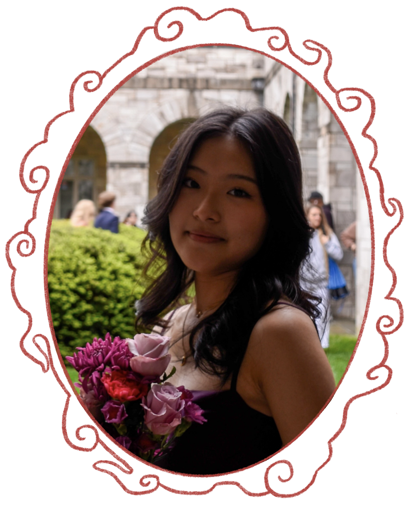

artist bio
I am a rising high school senior in Maryland. I enjoy collecting trinkets, blind boxes, postcards, keychains, beads, and more. I also love picking up new crafts, including crochet, knitting, embroidery, and hoping to get into sewing. Outside of the arts, I spend my time cooking, watching dramas, and listening to music. My passion for the arts and sciences inspires my aspirations to make technology more compassionate and human-centered.
artist statement
My work is driven by finding whimsy in the minute, evoking the storybook worlds I sought out as a child. I am particularly interested in exploring narrative metaphor and traditional motifs to depict the process of growing up. Through my work, I aim to strengthen my connection to both my inner child and my heritage, reflecting on how connections to the past shape the present, thus shaping my identity.
I find inspiration from children's media, cultural legends, and personal memories. My art-making practice encourages me to pay close attention to small details in my everyday life, allowing me to continue to forge deeper connections with my identity and surroundings.
